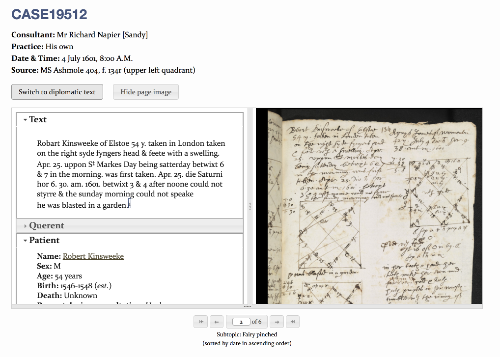
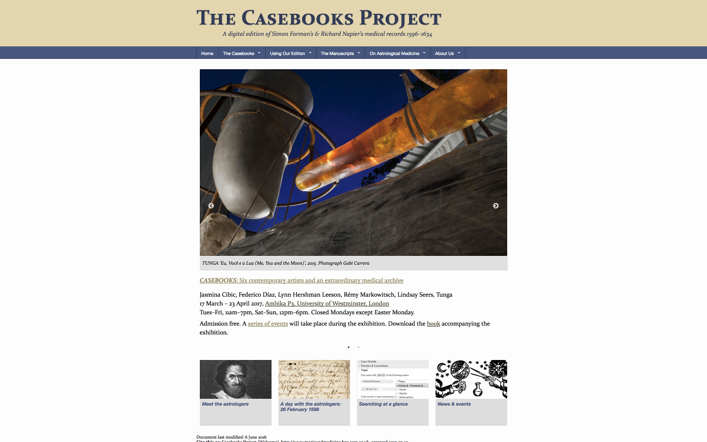
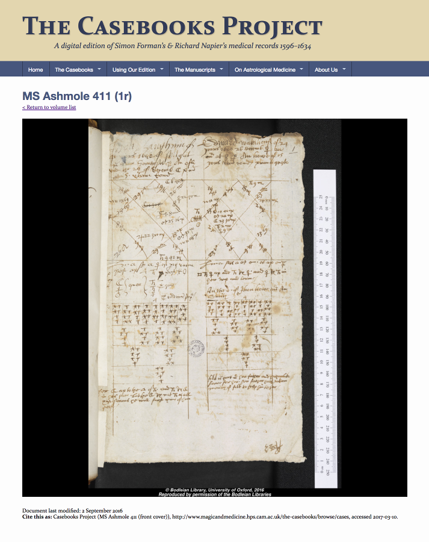
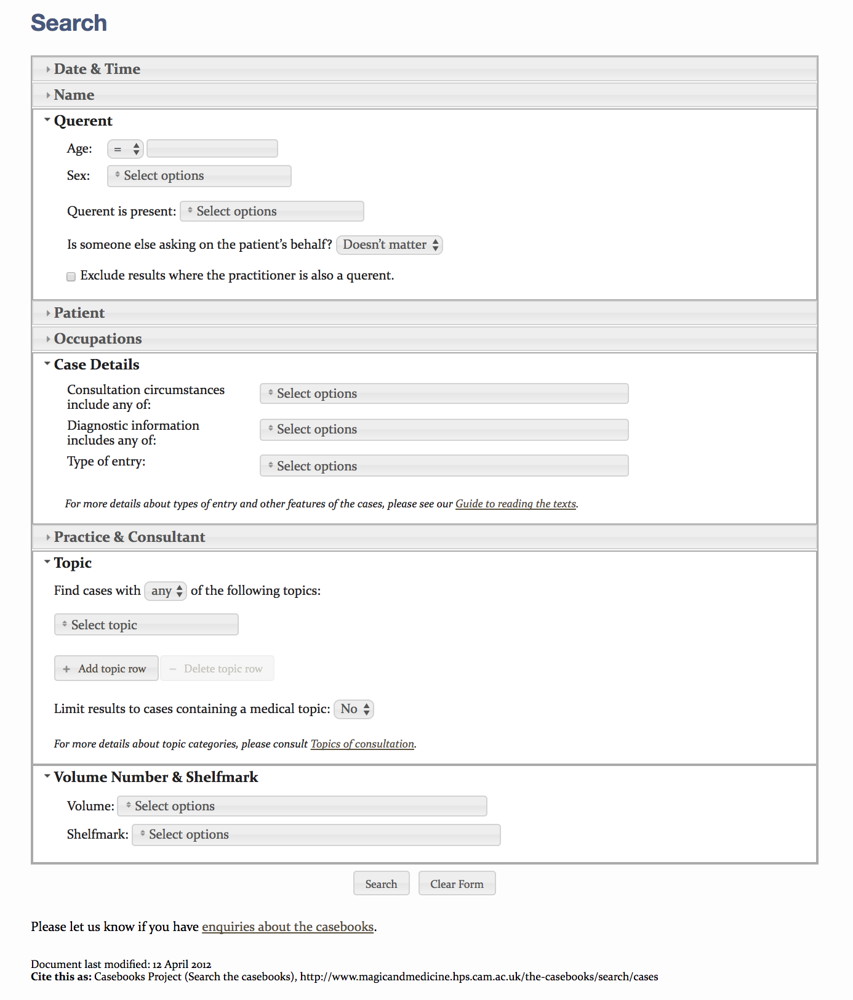
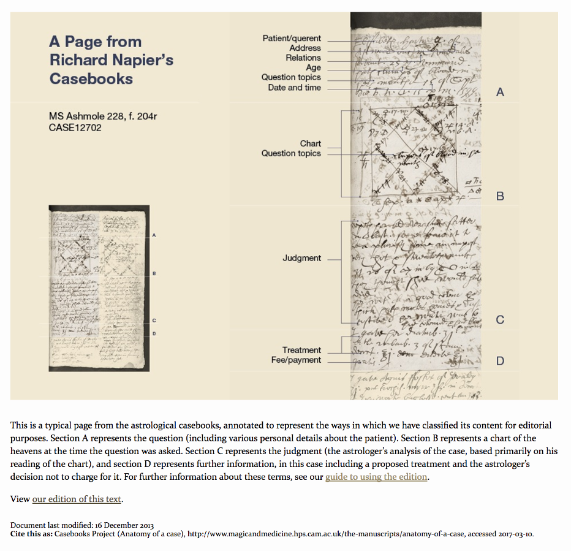
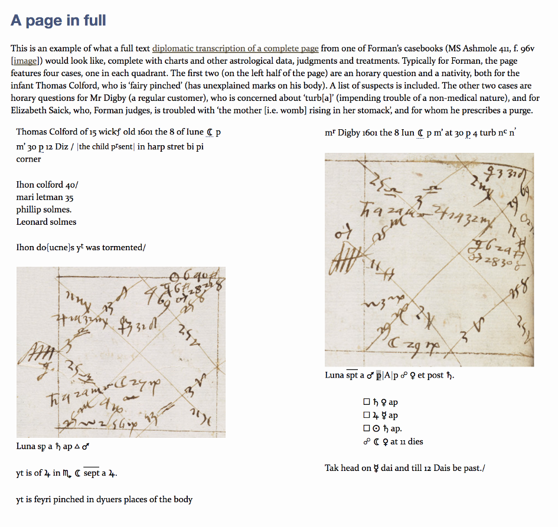
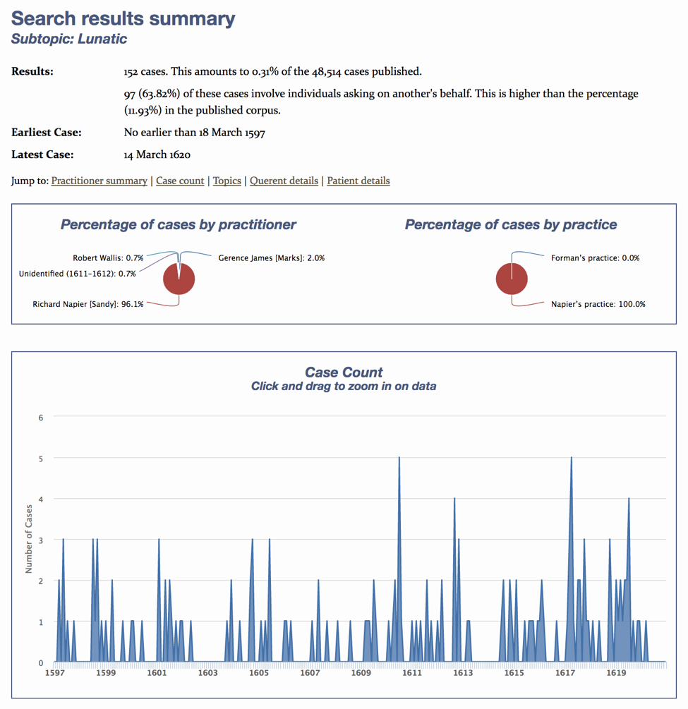
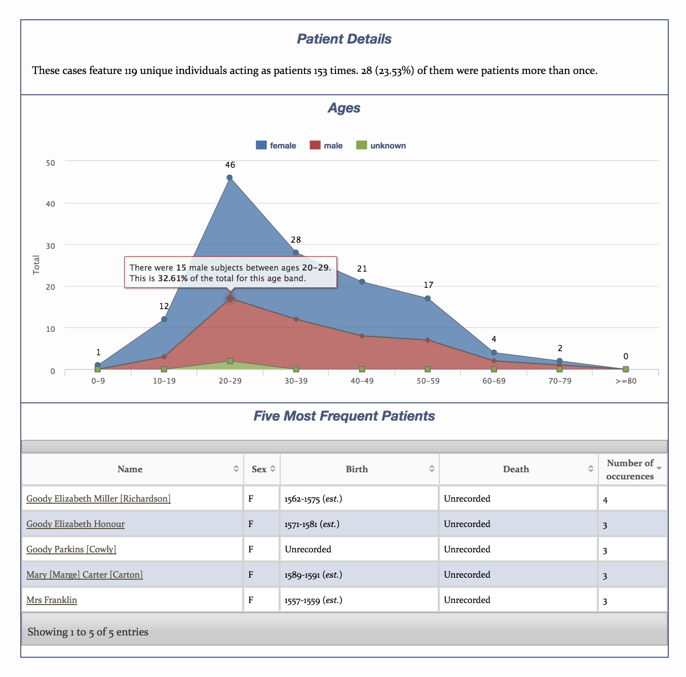
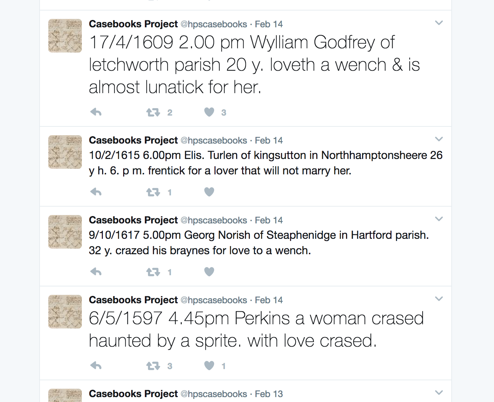

The Casebooks Project
Table of Contents
Abstract
This essay reviews The Casebooks Project, an ambitious attempt to digitize 80,000 astrological medical records from early modern England. The Casebooks Project exemplifies the possibilities of using digital technologies to understand early modern cultural and intellectual history, and offers us insight into the process of creating such a project. However, it remains unclear who the project’s audience is, whether to see it purely as a ‘dataset’ or as a textual-based digital edition, and how public-facing the project wants to be. This review seeks to use the digital edition and Dr. Lauren Kassell’s ongoing scholarly and public reflections on the project to highlight the project’s successes and suggest further possibilities it may inspire.
Introduction
The Casebooks Project highlights the interdisciplinary, qualitative, and quantitative potential digital technologies can offer scholars. It encourages researchers to explore thousands of otherwise indecipherable written records from the early modern era, and aims to focus the reader’s attention on the materiality of those records and the performative uses of writing and note-taking. As Lauren Kassell herself puts it, ‘It [The Casebooks Project] uses digital technologies to understand what were, in the seventeenth century, new paper technologies’ (2016, 120). This project stands out not only because of its scope and breadth, but also Kassell’s willingness to publically engage in self-critical reflection. In doing so, she allows us to access not only the project but the process of producing it: an invaluable opportunity for both amateurs and novices in the digital humanities.1
‘The Casebooks Project: A digital edition of Simon Forman’s and Richard Napier’s medical records 1596-1634’ is directed by Dr. Lauren Kassell. Kassell, the driving force behind the project, is the current director and a reader in the Department of History and Philosophy of Science and Fellow of Pembrook College, Cambridge. The eight-member team behind this project additionally comprises Dr. Michael Hawkins, the technical director, who has worked on projects such as The Newton Project, and currently also acts as a consultant to the Darwin Correspondence Project. Senior Editors include Dr. Robert Rally, responsible for independently transcribing and editing Forman’s guide to astrology, and Dr. John Young, who is responsible for the site’s transcription guidelines. Dr. Joanna Edge and Janet Yvonne Martin-Portugues are current assistant editors; Boyd Brogan and Natalie Kaoukji are current research fellows.2
The project was originally released on January 15, 2012, comprising approximately 10,000 entries, and has subsequently undergone 11 total releases. The last modification was on June 13, 2016, which added nearly 15,800 further cases, color images, and refinements to search and visualization functions on the site. The project is located at http://www.magicandmedicine.hps.cam.ac.uk.
What are Casebooks?
Early modern medical writing conforms to a variety of specific genres; Gianna Pomata, historian of medicine, suggests these genres are ‘highly structured and clearly recognizable textual conventions’ (2010, 197). By noticing changes in what she sees as ‘the disappearance, emergence, and transformation of epistemic genres,’ researchers can track ‘profound transformations in ways of thinking, collective and individual’ (Pomata 2010, 198). Pomata tracks the late-Renaissance genre of observationes, or collections of narrated medical cases, which first appear in connection to the astral sciences and move into law and medicine in the 16th century (2010, 204).
Kassell focuses on a slightly different genre, casebooks, which she describes as ‘material and intellectual artifacts of medical practice,’ often the only surviving trace of the early modern medical encounter itself (2014, 596). To differentiate them from other forms of note-taking or narrative records, she describes casebooks as primarily ‘serial records of practice’ (Kassell 2014, 600). Casebooks are thus emblematic of changing medical practice and cultural attitudes towards patients and disease (Kassell 2014, 603, Hess and Mendelsohn 2010).
The first practitioner in England whose astrological records survive are those of Richard Trewythian, who kept several dozen calculations between 1442 and 1458 (Kassell 2014, 608). Between 1450 and 1700, Kassell identifies thirty-six extant sets of medical casebooks and eleven sets of astrological casebooks in England (2014, 600). Her survey of astrological casebooks suggests several early figures, such as Johannes Schöner, Thomas Bodier, and an anonymous astrologer who recorded, respectively, from several dozen cases to several dozen pages of cases and questions (Kassell 2014, 608, 609).
One astrologer in particular, Simon Forman, occupies a central place in the history of casebooks, and more broadly, the history of medicine, the history of astrology, and intellectual history. Forman was ‘probably the most popular astrologer in Elizabethan London,’ and his records show a ‘practice of alchemy, natural magic, astrology, and medicine’ (Kassell 1999, 3, 4). Yet Forman, who was not formally educated and was in frequent conflict with the College of Physicians, enough to at one point even require leaving London to continue his practice, ‘figures in all of these accounts, sometimes as a charlatan, sometimes as a womanizer, and sometimes as a testament to the popularity of astrology; he has not been considered in his own right as an influence on the history of astrology or medicine’ (Kassell 1999). Countering this misconception, Kassell notes, ‘his and Napier [his successor]’s records are more systematic and extensive than anything else that survives’ (2014, 610). Their notebooks, spanning from 1596 to 1603, offer themselves up as a rich and unparalleled source of biographical, medical, and local information.
In the encounter, Forman and Napier would record the querent’s name and the exact time of the consultation, occasionally biographical information, and whether or not the querent was asking on behalf of someone else (Kassell 1999, 4). A chart was often drawn up, using techniques appropriate to astrology, geomancy, or numerology,3 and then a set of conclusions were made and perhaps therapeutic treatment was recorded (Kassell 1999, 4).
As such, the casebooks are particularly interesting not just for how they recorded, but also shaped, the medical encounter. For example, Kassell states, ‘The astrologer and his patient negotiated an exchange of trust for true judgments. Casebooks were central to this dynamic. They were instruments for judging the causes of disease, status objects demonstrating the astrologer’s expertise, and records of these practices. With pen and paper, the astrologer located each patient within the cosmos and signaled his authority to do so’ (Kassell 2014, 598). In turn, encountering these books through digital technologies can offer a window into what early modern medical practitioners’ lives were like, what the personal and medical lives of average, everyday men and women were like, and how early modern medical practitioners used paper and writing as tools for memory assistance and authority.
Subject and Content
The Casebooks Project, then, seeks to digitize, tag, and render searchable the astrological casebooks of both Forman and his successor, Richard Napier, which is the largest collection of such encounters in the history of early modern medicine. It specifically aims to provide researchers with quantitative and qualitative data generated from encoding the medical encounter. Because of the rich data this project generates, this scholarly digital edition lends itself to use not only by historians of medicine, but historians of science, local historians, and intellectual and social historians.
Aims and methods of the project are publically available, and include generating freely accessible, searchable transcriptions of both normalized and diplomatic versions, providing a platform for users to search the entire corpus or browse the entries sequentially, providing tabular CSV displays of the metadata, tracking specific individuals in the records and locating them within networks of relationships, and providing files in multiple formats, such as XHTML or even as a downloadable PDF.4
Kassell sees the project as building on the content and methodology of Michael MacDonald’s Mystical Bedlam: Madness, Anxiety and Healing in Seventeenth-Century England, and changing trends towards recovering lost patient voices; ‘MacDonald used a mainframe, in my initial work on Forman I used a laptop and a spreadsheet, the Casebooks Project uses XML and programs for processing its data and metadata. This is an example of what Tim Hitchcock has referred to as the use of computers to address the ‘human contents’ of the past, to recover the voices of ordinary people…’ (2016, 217). This project is, in other words, not merely an attempt to reconstruct written records and better understand practitioners and practice, but to reach a more nuanced understanding of patients and their experiences.
Of the 80,000 cases, 48,514 are currently available to browse or search as fully transcribed entries with associated images. An additional 1,992 cases have been ‘calendared,’ or in other words, dates, as well as names of querents and consultants, have been provided, but no other data has been transcribed. For transcribed cases, the editors focus on the ‘question’ component of the medical encounter, which includes the date and time, biographical information about the patient, and detailed information about the medical consultation. Other information is included on an as-needed basis, and specific editorial policies are publicly available.

Several other manuscripts have been transcribed and are available on the site. The project publishes a transcription of Simon Forman’s The Astrologicalle Judgmentes of phisick and other Questions, a guide to Forman’s astrological and medical practice. This transcription also offers the option to toggle between a diplomatic and a normalized version. High quality images are made available when necessary in the transcription, such as examples of Forman’s astrological charts. There are also transcriptions of other texts by Forman, ‘To Knowe where a woman be with child of a man or a woman’ ‘Rueles and observances before youe give Judgment’, ‘A Treatise touching the defense of Astrology’, and ‘Howe you shall knowe which vivent longest of a man vel muliere.’
Publication and Presentation



The second section, Using our Edition, instructs the user how to use the site and read the cases. Dedicated subpages explain how the topics were derived and what contemporary meaning they had, detailed instructions on how to use the search function, and a glossary of unfamiliar terms. Finally, all editorial policies are publically available here, including the project’s transcription guidelines, an element set, and coding references for users who want to use the raw XML files. Coding references are expansive and include handwriting, topics, and other entities, as well as other issues specifically related to the casebooks, and the project appears to follow common standards for TEI guidelines, all of which are available to browse.


The fourth section, On Astrological Medicine, provides information to navigate the practice of astrology, as well as transcribed versions of Napier and Forman’s guides to their practice, biographical information, and further reading and bibliographic information for users looking for more scholarship or contextual information.
Finally, the last section, About Us, is a repository of crucial project information, such as aims and methods, release information, staff details, links to news and events, funding sources, and permissions.
Editorial Decisions and Audience


Who is the audience for the Casebooks project? Kassell states that this is not a public engagement project, but instead designed to ‘make sense of archives at the highest possible level’.8 Yet while Kassell has written explicitly to a scholarly audience about Forman and the Casebooks, she has also written to a more public audience in the UK magazine History Today in September 2011 (Kassell 2011). In her review in The Edinburgh Companion to the Critical Medical Humanities, she defines the project’s audience as ‘users, not readers, and one of the challenges of the project is to tutor them in engaging critically with the casebooks’ (Kassell 2016, 127); in her earlier article in History Today she suggests that ‘it [the project] will also coach its users in the nature of these records…allowing scholars to explore the ways in which matters of health and questions about fortune more generally were socially constituted’ (Kassell 2011, 25). Yet the reach of this project has grown beyond only ‘scholarly’ limitations; the team maintains a humorous Twitter account to which over 1200 people are currently subscribed.9 A variety of other outreach efforts or tangential projects are listed on the main site, including a feature of the project in the Guardian’s cryptic crossword10 interviews in Der Spiegel,11 The Sydney Morning Harold,12 and The Atlantic.13 Elements of the research project are also being developed into a video game, as part of the Epic Games and Wellcome Trust Big Data Challenge,14 and Natalie Kaoukji, research fellow for the project, is developing a public arts project based on the casebooks at the gallery Ambika P3, as six contemporary artists respond to the project, expanding the scope of this project from paper and pen and digital technologies to ‘sculpture, video and audio installation, live performance, robotics and artificial intelligence’.15

The question of how to link research tools with social media is not a problem uniquely for the Casebooks Project to answer, but is one scholarly projects will increasingly need to grapple with in the future. Obviously, scholars will need different resources than a public audience, and if this project ultimately conceives of itself as an academic ‘dataset’ and not a public engagement project, then we should ask what non-scholarly users would do with the data generated. Or, if the project does wish to eventually develop a sustainable public-facing component, one must ask; can creative, public initiatives like the partnership with Ambika P3 inform or push the boundaries of scholarly research? In this case, can artistic or extra scholarly efforts help the scholarly digital editon represent the experiential and material nature of these books in a way that transcription alone cannot?
Conclusion and Further Directions
This project—despite unresolved tension as to whether it conceives of itself as primarily a textually-based edition or a ‘dataset’—still conforms to scholarly standards and should be considered a scholarly digital edition; the textual tradition is clearly documented, editorial decisions are transparent, and the work is of excellent scholarly quality. Further, this edition has clearly accomplished most of its ambitious aims and methods, even though the complete 80,000 records are not yet transcribed.
In a panel discussion of her work at New York University this past February, Kassell acknowledged some of the tensions mentioned in this review, through a framework of seven key questions about her own work: what does it mean to create a new archive from an old archive? What is a casebook? Is the project editing what the astrologer wrote, or the narrated encounter itself? How do we help readers navigate? What is the tension between front-end presentation and durability? How can the site be made appealing? And how can users navigate ‘flattened’ data which may not be necessarily statistically significant?
In this discussion, Kassell clarified several editorial decisions and processes not necessarily evident from the main site itself. In terms of durability, for example, the front-end of the project is currently moving to a new home at the University of Cambridge Libraries. Kassell’s main points of pride are not the front-end developments, but instead the XML and encoded case files, currently available from GitHub, and an index developed by the editorial team. The index is of particular interest, because the contemporary early modern invention of the index radically altered how cases were organized and conceptualized. That Forman and Napier’s work itself was not indexed gives as insight into how digital technologies can help us recreate and understand conceptual shifts in informational management strategies and shifts in early modern reading and writing habits.
I was also struck by Kassell’s ruminations on what exactly is being edited: the written material, or the medical encounter. This scholarly digital edition is a remarkable accomplishment for the qualitative and quantitative data generated from the written material, but there is much material from the encounter still unrepresented, particularly the performative elements of the casebooks. One example is the astrological chart, which is not reconstructed in any fashion in the transcriptions. Without presenting or representing the original charts, a key part of the casebooks’ essence would surely be lost if users only encountered the casebooks through the transcription, divorced from the page of the journal. Extra-textual encounters with patients are another example of unrepresented material. When asked in February about both these points, Kassell replied that while software developers can accurately use software to generate astrological charts, they are not always true to the charts in the book as Forman drew them, and that she believed the video game in development would capture the performative nature of astrological readings better than the site could. She further suggested that there is current ongoing effort to ‘encode reported speech’ and to record social encounters outside of the case. While this is exciting, as of this review those elements are not currently searchable. I also wish that metadata pertaining to the materiality of the text and elements of the writing itself—other than the location of the case within the volumes—were searchable, since their materiality clearly played a role in shaping the encounter and giving the astrologers authority.16
One can imagine how this project could evolve to study other samples of early modern medical writing, such as the many examples of observationes described by Pomata. This development could be used not only to generate local historical data, but broad, internationally-oriented information about humanist networks, circulation of medical information, and similarities and differences in medical and astrological practice across the continent. The ability to track cases, many of which were collected and recycled in various publications of observationes and casebooks in the late 17th-century, could offer insight into the history of reading and the history of publishing. The unique focus on the case also lends this type of project to adaptation for legal and other medical projects across many different time periods. In the meantime, however, this project is a remarkable accomplishment, both for the data it generates and its transparency. As it migrates to a new library host and hones its relationship to its audience(s), I hope we will continue to better understand the casebooks’ performative and material nature, as well as the lives of the patients and practitioners contained within them.
Bibliography
- Hess, Volker, and J. Andrew Mendelsohn. 2010. ‘Case and Series: Medical Knowledge and Paper Technology, 1600-1900.’ History of Science 48:287-314.
- Kassell, Lauren. 1999. ‘How to Read Simon Forman's Casebooks: Medicine, Astrology, and Gender in Elizabethan London.’ Social History of Medicine 12 (1):3-18.
- Kassell, Lauren. 2011. ‘The Astrologer's Tables.’ History Today, September 2011, 18-25.
- Kassell, Lauren. 2014. ‘Casebooks in Early Modern England: Medicine, Astrology, and Written Records.’ Bulletin of the History of Medicine 88 (4):595-625. doi: 10.1353/bhm.2014.0066.
- Kassell, Lauren. 2016. ‘Paper Technologies, Digital Technologies: Working with Early Modern Medical Records.’ In The Edinburgh Companion to the Critical Medical Humanities., edited by A Whitehead and A Woods, 120-135. Edinburgh: Edinburgh University Press.
- Pomata, Gianna. 2010. ‘Sharing Cases: The Observationes in Early Modern Medicine.’ Early Science and Medicine 15 (3):193-236. doi: 10.1163/157338210x493932.
Notes
- Joshua Kruchten is a former graduate student of English and American literature at New York University, and a current Erasmus Mundus student at the Université de Strasbourg and the Università di Bologna. ↑
- Information about staff for this project can be found. ↑
- Types of astrology in the Casebooks are described here. ↑
- Aims and methods are available here. ↑
- For editorial policies, see: http://web.archive.org/web/20170310223812/http://www.magicandmedicine.hps.cam.ac.uk/using-our-edition/editorial-policies. ↑
- See note 4. ↑
- I performed a search using the topic for ‘lunatic.’ Those results are available here. ↑
- These are remarks by Dr. Kassell from a panel given at NYU, ‘Inscription, Digitization and the Shape of Knowledge,’ for the NYU Center for the Humanities. The event was recorded and archived, and is publicly available on the NYU Center for the Humanities’ YouTube channel: https://www.youtube.com/watch?v=hxgFqx06IrI. ↑
- The Twitter account, @hpscasebooks, can be found here. ↑
- http://web.archive.org/web/20170310224014/https://www.theguardian.com/crosswords/prize/25107. ↑
- http://web.archive.org/web/20170310224108/http://www.spiegel.de/spiegel/print/d-83180880.html. ↑
- http://web.archive.org/web/20170310224204/http://www.smh.com.au/world/science/astrologers-medical-records-a-star-turn-20111014-1lp4u.html. ↑
- http://web.archive.org/web/20170310224239/https://www.theatlantic.com/health/archive/2013/11/your-zodiac-sign-your-health/281358/. ↑
- http://web.archive.org/web/20170310224315/https://www.unrealengine.com/blog/epic-games-and-wellcome-trust-reveal-20000-big-data-vr-challenge-winner. ↑
- See the AmbikaP3 site. ↑
- Kassell states, for example, ‘Treating casebooks as found objects highlights how medical practitioners used writing as a tool for marking details or constructing narratives…the format of the notebook…should vary depending on the case…placing each casebook requires attention to the level of learning of the author, format of the paper, layout of the page, ordering of the records, and whether the script is rough or fair’ (2014, 615). ↑
@article{casebooks,
author = {Kruchten, Joshua},
title = {The Casebooks Project},
journal = {RIDE – A review journal for digital editions and resources},
number = {7},
year = {2017},
doi = {10.18716/ride.a.7.4},
url = {https://doi.org/10.18716/ride.a.7.4},
}TY - JOUR
AU - Kruchten, Joshua
TI - The Casebooks Project
T2 - RIDE – A review journal for digital editions and resources
IS - 7
PY - 2017
DA - 2017/12
DO - 10.18716/ride.a.7.4
UR - https://doi.org/10.18716/ride.a.7.4
PB - Institut für Dokumentologie und Editorik e. V.
LA - en
ER - Kruchten, J. (2017). The Casebooks Project. RIDE – A review journal for digital editions and resources, (7). https://doi.org/10.18716/ride.a.7.4Kruchten, Joshua. "The Casebooks Project." RIDE – A review journal for digital editions and resources, no. 7, 2017. https://doi.org/10.18716/ride.a.7.4.Kruchten, Joshua. "The Casebooks Project." RIDE – A review journal for digital editions and resources, no. 7 (2017). https://doi.org/10.18716/ride.a.7.4.